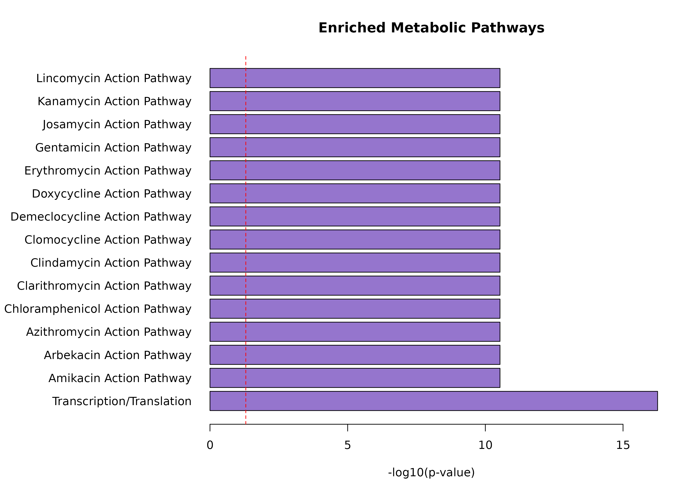
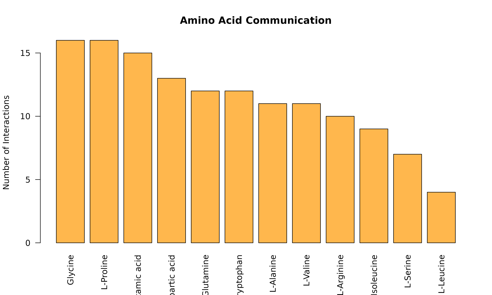

Overview
This tutorial demonstrates practical applications of scMetaLink using the colorectal cancer (CRC) example dataset. We’ll explore:
- Tumor metabolism and communication
- Immune cell metabolic interactions
- Stromal-epithelial crosstalk
- Pathway-level analysis
- Hypothesis generation
library(scMetaLink)
library(Matrix)
# Load data and run full analysis
data(crc_example)
# Check cell types available
cat("Cell types in CRC dataset:\n")
#> Cell types in CRC dataset:
print(table(crc_meta$cell_type))
#>
#> B CAF Endothelial Gliacyte
#> 150 200 100 20
#> Mast Monocyte Normal Epithelial Normal Fibroblast
#> 30 120 300 200
#> Normal Macrophage Pericyte Plasma SMC
#> 150 50 250 30
#> T TAM Tumor Epithelial
#> 500 150 600Application 1: Tumor Metabolic Communication
Question: How do tumor cells communicate with their microenvironment?
# Run scMetaLink
obj <- createScMetaLink(crc_expr, crc_meta, "cell_type")
obj <- inferProduction(obj, verbose = FALSE)
obj <- inferSensing(obj, verbose = FALSE)
obj <- computeCommunication(obj, n_permutations = 100, verbose = FALSE)
obj <- filterSignificantInteractions(obj, adjust_method = "none") # For demo
# Get significant interactions
sig <- obj@significant_interactions
# Filter for tumor as sender or receiver
tumor_types <- c("Tumor Epithelial")
tumor_sender <- sig[sig$sender %in% tumor_types, ]
tumor_receiver <- sig[sig$receiver %in% tumor_types, ]
cat("Interactions with tumor cells:\n")
#> Interactions with tumor cells:
cat(" As sender:", nrow(tumor_sender), "\n")
#> As sender: 497
cat(" As receiver:", nrow(tumor_receiver), "\n")
#> As receiver: 391Tumor Outgoing Signals
if (nrow(tumor_sender) > 0) {
# What metabolites do tumors secrete?
tumor_secreted <- table(tumor_sender$metabolite_name)
tumor_secreted <- sort(tumor_secreted, decreasing = TRUE)
par(mar = c(10, 4, 4, 2))
barplot(head(tumor_secreted, 15),
las = 2, col = "#E57373",
main = "Metabolites Secreted by Tumor Cells",
ylab = "Number of Target Cell Types"
)
}Figure 1: Tumor-Secreted Metabolites. Bar plot showing the top metabolites produced by tumor cells and the number of different cell types that sense each metabolite.
Tumor Incoming Signals
if (nrow(tumor_receiver) > 0) {
# What metabolites do tumors sense?
tumor_sensed <- table(tumor_receiver$metabolite_name)
tumor_sensed <- sort(tumor_sensed, decreasing = TRUE)
par(mar = c(10, 4, 4, 2))
barplot(head(tumor_sensed, 15),
las = 2, col = "#64B5F6",
main = "Metabolites Sensed by Tumor Cells",
ylab = "Number of Source Cell Types"
)
}
Figure 1b: Tumor-Sensed Metabolites. Top metabolites detected or taken up by tumor cells. These metabolites may provide nutrients or signaling molecules that support tumor growth.
The Warburg Effect: Lactate Signaling
Lactate is a hallmark metabolite of the Warburg effect in cancer metabolism. Tumor cells produce excess lactate even in the presence of oxygen.
# Lactate is a hallmark of tumor metabolism (Warburg effect)
lactate_sig <- sig[sig$metabolite_name == "L-Lactic acid", ]
if (nrow(lactate_sig) > 0) {
cat("Lactate-mediated interactions:", nrow(lactate_sig), "\n\n")
# Who produces lactate?
lactate_prod <- aggregate(communication_score ~ sender, data = lactate_sig, FUN = sum)
lactate_prod <- lactate_prod[order(-lactate_prod$communication_score), ]
# Who senses lactate?
lactate_sens <- aggregate(communication_score ~ receiver, data = lactate_sig, FUN = sum)
lactate_sens <- lactate_sens[order(-lactate_sens$communication_score), ]
par(mfrow = c(1, 2))
barplot(lactate_prod$communication_score,
names.arg = lactate_prod$sender,
las = 2, col = "#FF8A65", main = "Lactate Producers"
)
barplot(lactate_sens$communication_score,
names.arg = lactate_sens$receiver,
las = 2, col = "#4FC3F7", main = "Lactate Sensors"
)
par(mfrow = c(1, 1))
}
#> Lactate-mediated interactions: 3Figure 2: Lactate-Mediated Communication (Warburg Effect). Left: Cell types that produce lactate. Right: Cell types that sense/uptake lactate. Tumor cells are typically major producers, while immune cells are important sensors.
Biological Insight: Tumor cells often produce high levels of lactate even in the presence of oxygen (Warburg effect). This lactate can modulate immune cell function and promote tumor progression.
Application 2: Immune Cell Metabolic Interactions
Question: How do immune cells communicate via metabolites?
# Define immune cell types
immune_types <- c("T", "B", "Plasma", "TAM", "Monocyte", "Normal Macrophage", "Mast")
# Filter for immune-immune interactions
immune_sig <- sig[sig$sender %in% immune_types & sig$receiver %in% immune_types, ]
cat("Immune-immune interactions:", nrow(immune_sig), "\n")
#> Immune-immune interactions: 531Immune Communication Network
if (nrow(immune_sig) > 0) {
# Build communication matrix for immune cells
immune_cells <- unique(c(immune_sig$sender, immune_sig$receiver))
immune_mat <- matrix(0, length(immune_cells), length(immune_cells),
dimnames = list(immune_cells, immune_cells)
)
for (i in 1:nrow(immune_sig)) {
immune_mat[immune_sig$sender[i], immune_sig$receiver[i]] <-
immune_mat[immune_sig$sender[i], immune_sig$receiver[i]] +
immune_sig$communication_score[i]
}
heatmap(immune_mat,
col = hcl.colors(50, "YlOrRd"), scale = "none",
main = "Immune Cell Metabolic Communication"
)
}Figure 3: Immune Cell Communication Network. Heatmap showing metabolite-mediated communication strength between immune cell types. T cells, macrophages, and B cells often form key communication hubs.
Macrophage Polarization Metabolites
# TAM (Tumor-Associated Macrophages) vs Normal Macrophages
mac_types <- c("TAM", "Normal Macrophage")
mac_sig <- sig[sig$sender %in% mac_types | sig$receiver %in% mac_types, ]
if (nrow(mac_sig) > 0) {
# Compare metabolites
tam_mets <- mac_sig$metabolite_name[mac_sig$sender == "TAM" | mac_sig$receiver == "TAM"]
normal_mac_mets <- mac_sig$metabolite_name[mac_sig$sender == "Normal Macrophage" |
mac_sig$receiver == "Normal Macrophage"]
cat("TAM-associated metabolites:", length(unique(tam_mets)), "\n")
cat("Normal Macrophage-associated metabolites:", length(unique(normal_mac_mets)), "\n")
# Unique to each
tam_unique <- setdiff(unique(tam_mets), unique(normal_mac_mets))
normal_unique <- setdiff(unique(normal_mac_mets), unique(tam_mets))
cat("\nUnique to TAM:\n")
print(head(tam_unique, 10))
cat("\nUnique to Normal Macrophage:\n")
print(head(normal_unique, 10))
}
#> TAM-associated metabolites: 207
#> Normal Macrophage-associated metabolites: 200
#>
#> Unique to TAM:
#> [1] "Estriol" "Leukotriene C4"
#> [3] "L-Lactic acid" "Leukotriene E4"
#> [5] "Lithocholyltaurine" "5-HETE"
#> [7] "Gamma-linolenyl carnitine" "Vaccenyl carnitine"
#> [9] "Arachidyl carnitine" "Stearoylcarnitine"
#>
#> Unique to Normal Macrophage:
#> [1] "Cholic acid" "Hydrogen carbonate"
#> [3] "L-Methionine" "13-cis-Retinoic acid"
#> [5] "Calcitriol" "Liothyronine"
#> [7] "MG(0:0/20:4(5Z,8Z,11Z,14Z)/0:0)" "Formic acid"
#> [9] "Sulfate" "Prostaglandin F2a"Application 3: Stromal-Epithelial Crosstalk
Question: How do CAFs communicate with tumor and normal epithelium?
# Define cell type groups
stromal <- c("CAF", "Normal Fibroblast", "Pericyte", "SMC", "Endothelial")
epithelial <- c("Tumor Epithelial", "Normal Epithelial")
# Stromal to epithelial
stroma_to_epi <- sig[sig$sender %in% stromal & sig$receiver %in% epithelial, ]
# Epithelial to stromal
epi_to_stroma <- sig[sig$sender %in% epithelial & sig$receiver %in% stromal, ]
cat("Stromal -> Epithelial:", nrow(stroma_to_epi), "interactions\n")
#> Stromal -> Epithelial: 173 interactions
cat("Epithelial -> Stromal:", nrow(epi_to_stroma), "interactions\n")
#> Epithelial -> Stromal: 311 interactionsCAF-Tumor Communication
caf_tumor <- sig[(sig$sender == "CAF" & sig$receiver == "Tumor Epithelial") |
(sig$sender == "Tumor Epithelial" & sig$receiver == "CAF"), ]
if (nrow(caf_tumor) > 0) {
cat("CAF-Tumor interactions:", nrow(caf_tumor), "\n\n")
# Split by direction
caf_to_tumor <- caf_tumor[caf_tumor$sender == "CAF", ]
tumor_to_caf <- caf_tumor[caf_tumor$sender == "Tumor Epithelial", ]
par(mfrow = c(1, 2))
if (nrow(caf_to_tumor) > 0) {
caf_mets <- table(caf_to_tumor$metabolite_name)
barplot(sort(caf_mets, decreasing = TRUE),
las = 2, col = "#A5D6A7",
main = "CAF -> Tumor", cex.names = 0.7
)
}
if (nrow(tumor_to_caf) > 0) {
tumor_mets <- table(tumor_to_caf$metabolite_name)
barplot(sort(tumor_mets, decreasing = TRUE),
las = 2, col = "#EF9A9A",
main = "Tumor -> CAF", cex.names = 0.7
)
}
par(mfrow = c(1, 1))
}
#> CAF-Tumor interactions: 106
Biological Insight: Cancer-Associated Fibroblasts (CAFs) can provide metabolic support to tumor cells and receive metabolic signals that promote their activation.
Application 4: Pathway-Level Analysis
Question: Which metabolic pathways are most active in communication?
# Aggregate by pathway
obj <- aggregateByPathway(obj)
# View pathway-level results
pathway_data <- obj@pathway_aggregated
if (!is.null(pathway_data) && nrow(pathway_data) > 0) {
cat("Pathway analysis available\n")
cat("Number of pathway entries:", nrow(pathway_data), "\n")
cat("Unique pathways:", length(unique(pathway_data$pathway)), "\n")
}
#> Pathway analysis available
#> Number of pathway entries: 5356
#> Unique pathways: 50Top Active Pathways
# Get pathway enrichment
pathway_enrichment <- enrichPathways(obj)
if (!is.null(pathway_enrichment) && nrow(pathway_enrichment) > 0) {
# Top enriched pathways
top_pathways <- head(pathway_enrichment[order(pathway_enrichment$pvalue), ], 15)
par(mar = c(4, 15, 4, 2))
barplot(-log10(top_pathways$pvalue),
horiz = TRUE,
names.arg = top_pathways$pathway, las = 1,
col = "#9575CD", main = "Enriched Metabolic Pathways",
xlab = "-log10(p-value)"
)
abline(v = -log10(0.05), lty = 2, col = "red")
}
Specific Pathway Focus: Amino Acid Metabolism
# Filter for amino acid-related metabolites
amino_acids <- c(
"L-Glutamic acid", "L-Glutamine", "L-Alanine", "Glycine",
"L-Serine", "L-Proline", "L-Aspartic acid", "L-Arginine",
"L-Leucine", "L-Isoleucine", "L-Valine", "L-Tryptophan"
)
aa_sig <- sig[sig$metabolite_name %in% amino_acids, ]
cat("Amino acid-mediated interactions:", nrow(aa_sig), "\n")
#> Amino acid-mediated interactions: 136
if (nrow(aa_sig) > 0) {
# Which amino acids are most involved?
aa_counts <- table(aa_sig$metabolite_name)
aa_counts <- sort(aa_counts, decreasing = TRUE)
barplot(aa_counts,
las = 2, col = "#FFB74D",
main = "Amino Acid Communication",
ylab = "Number of Interactions"
)
}
Application 5: Hypothesis Generation
Identifying Novel Communication Axes
# Find unexpected interactions (high score, unique combinations)
sig_sorted <- sig[order(-sig$communication_score), ]
cat("=== Top Novel Communication Axes ===\n\n")
#> === Top Novel Communication Axes ===
# Show top interactions with context
for (i in 1:min(10, nrow(sig_sorted))) {
row <- sig_sorted[i, ]
cat(sprintf("%d. %s -> %s via %s\n", i, row$sender, row$receiver, row$metabolite_name))
cat(sprintf(
" Score: %.3f, Adjusted p-value: %.4f\n\n",
row$communication_score, row$pvalue_adjusted
))
}
#> 1. Monocyte -> Mast via Epinephrine
#> Score: 1.000, Adjusted p-value: 0.0099
#>
#> 2. Normal Epithelial -> Plasma via 5-Androstenediol
#> Score: 0.999, Adjusted p-value: 0.0099
#>
#> 3. Endothelial -> Mast via Prostaglandin F1a
#> Score: 0.990, Adjusted p-value: 0.0099
#>
#> 4. Gliacyte -> B via 12-Keto-leukotriene B4
#> Score: 0.986, Adjusted p-value: 0.0099
#>
#> 5. Plasma -> Plasma via Estriol
#> Score: 0.982, Adjusted p-value: 0.0099
#>
#> 6. Normal Macrophage -> T via Cholesterol sulfate
#> Score: 0.977, Adjusted p-value: 0.0099
#>
#> 7. Tumor Epithelial -> B via Stearoylethanolamide
#> Score: 0.975, Adjusted p-value: 0.0099
#>
#> 8. Monocyte -> B via L-Lactic acid
#> Score: 0.968, Adjusted p-value: 0.0099
#>
#> 9. Endothelial -> CAF via Prostaglandin F2a
#> Score: 0.966, Adjusted p-value: 0.0099
#>
#> 10. Tumor Epithelial -> Plasma via 16a-Hydroxyestrone
#> Score: 0.956, Adjusted p-value: 0.0099Autocrine Signaling
# Cells signaling to themselves
autocrine <- sig[sig$sender == sig$receiver, ]
cat("Autocrine interactions:", nrow(autocrine), "\n\n")
#> Autocrine interactions: 213
if (nrow(autocrine) > 0) {
# Which cell types have autocrine signaling?
auto_counts <- table(autocrine$sender)
barplot(sort(auto_counts, decreasing = TRUE),
las = 2, col = "#81D4FA",
main = "Autocrine Metabolite Signaling",
ylab = "Number of Autocrine Interactions"
)
# What metabolites are involved in autocrine signaling?
cat("\nTop autocrine metabolites:\n")
print(head(sort(table(autocrine$metabolite_name), decreasing = TRUE), 10))
}
#>
#> Top autocrine metabolites:
#>
#> Acetaldehyde Androstenedione
#> 3 3
#> L-Proline Leukotriene A4
#> 3 3
#> Progesterone 11beta-Hydroxyprogesterone
#> 3 2
#> 16a-Hydroxydehydroisoandrosterone 2-Arachidonyl Glycerol ether
#> 2 2
#> 22b-Hydroxycholesterol 4-Hydroxynonenal
#> 2 2Hub Cell Types
# Which cell types are communication hubs?
cell_types <- unique(c(sig$sender, sig$receiver))
hub_stats <- data.frame(
cell_type = cell_types,
out_degree = sapply(cell_types, function(ct) length(unique(sig$receiver[sig$sender == ct]))),
in_degree = sapply(cell_types, function(ct) length(unique(sig$sender[sig$receiver == ct]))),
out_strength = sapply(cell_types, function(ct) sum(sig$communication_score[sig$sender == ct])),
in_strength = sapply(cell_types, function(ct) sum(sig$communication_score[sig$receiver == ct]))
)
hub_stats$total_degree <- hub_stats$out_degree + hub_stats$in_degree
hub_stats <- hub_stats[order(-hub_stats$total_degree), ]
cat("=== Communication Hub Analysis ===\n")
#> === Communication Hub Analysis ===
print(hub_stats)
#> cell_type out_degree in_degree out_strength
#> Normal Epithelial Normal Epithelial 15 15 274.94376
#> Endothelial Endothelial 15 15 97.69638
#> Plasma Plasma 15 15 81.42825
#> Normal Macrophage Normal Macrophage 15 15 148.36082
#> Tumor Epithelial Tumor Epithelial 15 15 311.72322
#> Pericyte Pericyte 15 15 113.00079
#> CAF CAF 15 15 134.26134
#> Normal Fibroblast Normal Fibroblast 15 14 151.78725
#> TAM TAM 14 15 130.41822
#> T T 14 15 86.71780
#> Monocyte Monocyte 13 15 51.48416
#> B B 13 15 45.08255
#> Mast Mast 15 12 51.42597
#> Gliacyte Gliacyte 13 12 52.71885
#> SMC SMC 12 11 33.22659
#> in_strength total_degree
#> Normal Epithelial 67.84414 30
#> Endothelial 58.91013 30
#> Plasma 80.31860 30
#> Normal Macrophage 302.40475 30
#> Tumor Epithelial 240.96658 30
#> Pericyte 106.76955 30
#> CAF 136.64635 30
#> Normal Fibroblast 148.94226 29
#> TAM 228.65835 29
#> T 144.36241 29
#> Monocyte 63.43905 28
#> B 80.18010 28
#> Mast 36.83130 27
#> Gliacyte 48.88093 25
#> SMC 19.12146 23
# Visualize
par(mfrow = c(1, 2))
plot(hub_stats$out_strength, hub_stats$in_strength,
pch = 19, cex = 2, col = "#1976D2",
xlab = "Outgoing Strength", ylab = "Incoming Strength",
main = "Cell Type Communication Profile"
)
text(hub_stats$out_strength, hub_stats$in_strength,
hub_stats$cell_type,
pos = 3, cex = 0.7
)
abline(0, 1, lty = 2, col = "gray")
# Degree distribution
barplot(hub_stats$total_degree,
names.arg = hub_stats$cell_type,
las = 2, col = "#4CAF50", main = "Communication Degree"
)
Summary: Key Findings from CRC Analysis
cat("=== Analysis Summary ===\n\n")
#> === Analysis Summary ===
cat("Dataset: Colorectal Cancer Single-Cell Data\n")
#> Dataset: Colorectal Cancer Single-Cell Data
cat("Cells:", ncol(crc_expr), "\n")
#> Cells: 2850
cat("Cell Types:", length(unique(crc_meta$cell_type)), "\n")
#> Cell Types: 15
cat("Significant Interactions:", nrow(sig), "\n")
#> Significant Interactions: 2754
cat("Metabolites Involved:", length(unique(sig$metabolite_name)), "\n\n")
#> Metabolites Involved: 277
cat("Key Observations:\n")
#> Key Observations:
cat("1. Tumor cells are active metabolic communicators\n")
#> 1. Tumor cells are active metabolic communicators
cat("2. Lactate (Warburg effect) mediates tumor-stroma crosstalk\n")
#> 2. Lactate (Warburg effect) mediates tumor-stroma crosstalk
cat("3. Immune cells form a metabolic communication network\n")
#> 3. Immune cells form a metabolic communication network
cat("4. CAF-tumor axis shows bidirectional signaling\n")
#> 4. CAF-tumor axis shows bidirectional signaling
cat("5. Amino acid metabolism is highly connected\n")
#> 5. Amino acid metabolism is highly connectedExport Results for Further Analysis
# Export all results
exportResults(obj, output_dir = "scMetaLink_CRC_results")
# Export specific tables
write.csv(sig, "significant_interactions.csv", row.names = FALSE)
write.csv(hub_stats, "cell_type_hub_analysis.csv", row.names = FALSE)Session Info
sessionInfo()
#> R version 4.5.2 (2025-10-31)
#> Platform: x86_64-pc-linux-gnu
#> Running under: Ubuntu 24.04.3 LTS
#>
#> Matrix products: default
#> BLAS: /usr/lib/x86_64-linux-gnu/openblas-pthread/libblas.so.3
#> LAPACK: /usr/lib/x86_64-linux-gnu/openblas-pthread/libopenblasp-r0.3.26.so; LAPACK version 3.12.0
#>
#> locale:
#> [1] LC_CTYPE=C.UTF-8 LC_NUMERIC=C LC_TIME=C.UTF-8
#> [4] LC_COLLATE=C.UTF-8 LC_MONETARY=C.UTF-8 LC_MESSAGES=C.UTF-8
#> [7] LC_PAPER=C.UTF-8 LC_NAME=C LC_ADDRESS=C
#> [10] LC_TELEPHONE=C LC_MEASUREMENT=C.UTF-8 LC_IDENTIFICATION=C
#>
#> time zone: UTC
#> tzcode source: system (glibc)
#>
#> attached base packages:
#> [1] stats graphics grDevices utils datasets methods base
#>
#> other attached packages:
#> [1] Matrix_1.7-4 scMetaLink_1.0.0
#>
#> loaded via a namespace (and not attached):
#> [1] cli_3.6.5 knitr_1.51 rlang_1.1.7 xfun_0.56
#> [5] otel_0.2.0 textshaping_1.0.4 jsonlite_2.0.0 htmltools_0.5.9
#> [9] ragg_1.5.0 sass_0.4.10 rmarkdown_2.30 grid_4.5.2
#> [13] evaluate_1.0.5 jquerylib_0.1.4 fastmap_1.2.0 yaml_2.3.12
#> [17] lifecycle_1.0.5 compiler_4.5.2 fs_1.6.6 htmlwidgets_1.6.4
#> [21] systemfonts_1.3.1 lattice_0.22-7 digest_0.6.39 R6_2.6.1
#> [25] bslib_0.9.0 tools_4.5.2 pkgdown_2.2.0 cachem_1.1.0
#> [29] desc_1.4.3